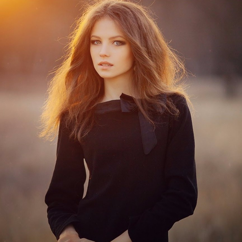

Dutch duo Droeloe (pronounced "drooloo"), comprised of producer Vincent Rooijers and visual designer Hein Hamers, have been all over the EDM (Electronic Dance Music) scene as of late, releasing singles on multiple influential dance music labels such as Vancouver, BC's Monstercat (Maya's favorite label, as you may recall!) and Bitbird (founded by esteemed and fellow Dutch EDM producer San Holo). Like so many modern artists, especially in the electronic music arena, Droeloe began by uploading their "future bass" music to SoundCloud before gaining a following and the attention of EDM labels. Since 2016, with San Holo (né Sander van Dijck) taking them under his wing, Droeloe has had the opportunity to tour the world both as an opener for van Dijck and on their own.
Droloe's signature "future bass" sound is perhaps best described as "fun", as evidenced with the track on this mix, where space-age gamelon synth sounds dance across deep and contrapuntal basslines. Another key to many of their best tracks is the addition of engaging vocal melodies from such singers as the mysterious Nevve, featured on a number of Droeloe tracks, including "Jump". With no one exactly sure where she is from or what she looks like (this picture is the most accepted, but still disputed, image), Nevve has made an impact in the EDM world beyond just Droeloe, appearing on at least two dozen tracks in the last couple of years. Her airy vocals are perfect for "Jump", and with the increasing demand for her services, it seems unlikely that she'll be able to maintain the anonyminity that she's cultivated thus far.